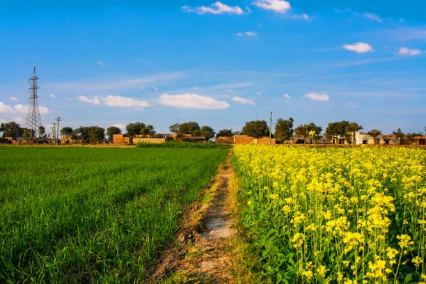

Places to visit
Punjab has various visitor attractions including within the city.
Punjab

Amritsar
AmritsarIt is one of Punjab's most popular and known places, mainly because of the Golden Temple. Apart from being a religious hub, Amritsar is also known for its delicious street food and the Baisakhi festival. Moreover, it has had a historical value since the Jallianwala Bagh massacre happened here. It is also one of the most agriculturally productive cities in India.

Chandigarh
ChandigarhIt is the capital of both Haryana and Punjab, which makes it extremely popular. Like Amritsar, it is also known for lip-smacking street food. You will enjoy its perfect blend of modernity and antiquity, with shopping malls, Sukhna Lake, cafes and gardens. Chandigarh is one of the cleanest cities in Punjab, designed out of discarded industrial and urban waste. Additionally, it is well-connected with every part of Punjab, making commuting easier.
Jalandhar
JalandharThis city is known for its rich heritage, holding the history of Punjab. It was a part of the historic Indus Valley Civilisation. This helps you learn more about history by observing these sites. On the other hand, it is a key exporter of sports and leather goods. You can go shopping in the streets or malls to find the latest collection. Additionally, it is popular for dance forms and festivals, such as Jhumar, Gidda and Bhangra.
Ludhiana
LudhianaThe river Sutlej covers this city and is considered the biggest manufacturing hub in India. It is again famous for its historical remains, such as the war museums and ruins of the Lodi Dynasty. You will find an old-school charm here, even after being an industrial town. Ludhiana has attracted pilgrims and religious tourists with its forts and Gurudwaras. Moreover, it is also popular for street food, amusement parks and natural beauty.
Patiala
PatialaThe name Patiala is essential here if you are listing the most beautiful places in Punjab. It has several architectural monuments and buildings straight from the Mughal and Rajput eras. It is often the preferred destination if you wish to explore the core traditions of Punjab. Apart from the historical sites, you can also go shopping for traditional and authentic Punjabi items, such as parandas, juttis, etc.
Bhatinda
BhatindaBhatinda, or Bathinda, also called the “City of Lakes”, is another well-known tourist spot in Punjab. It is one of Punjab's oldest cities, and has been famous as a historical and religious centre since 7000 BC. This makes it a fascinating spot for historical significance. Apart from that, it has thermal power plants, AIIMS and the Central University of Punjab and is also known for its natural beauty and numerous historical sites.
Pathankot
PathankotSituated in the meeting point of Punjab, Jammu & Kashmir and Himachal Pradesh, Pathankot is famous for its geographical presence and natural beauty. Pathankot, with its stunning landscapes, serene environment and lush green surroundings, will help you escape the urbanised lifestyle. It is also known for its Loi and shawl weaving industry, which allows you to consider shopping.
Mohali
MohaliIt is another popular tourist destination in Punjab. It is mainly known for being a major cultural, commercial and transportation centre. Moreover, it has gained popularity for being home to PCA Cricket Stadium and International Hockey Stadium, attracting sports enthusiasts.
Ropar
RoparRopar or Roopnagar has been a popular name for the most famous tourist places in Punjab. This ancient town is famous for its historical significance, such as the ruins of the Harappan civilisation. Its Archaeological Museum stores multiple artefacts from this period. If you are into historical incidents, this place is just the perfect destination for a quick holiday. It is also popular for Ropar Wetlands, an ecological zone containing multiple animals of rare species.

Nangal
NangalIf you are looking for an offbeat and unexplored region for a holiday, Nangal can be perfect. It is mainly popular for the Bhakra Nangal Dam. It is located on the foothills of the Shivalik ranges, which increases its natural beauty and tourist attraction. Apart from the dam, Nangal is known for its stunning visuals and landscapes. Tourists enjoy lazy afternoons exploring the Sikh history at Virasat-e-Khalsa.